全文翻译
摘要
最近，大规模文本驱动的合成模型因其能够生成高度多样化且符合给定文本提示的图像的卓越能力而备受关注。这种基于文本的合成方法对习惯用语言描述意图的人们来说特别有吸引力。因此，将文本驱动的图像合成扩展到文本驱动的图像编辑是很自然的想法。对于这些生成模型而言，编辑是一项具有挑战性的任务，因为编辑技术的一个固有属性是保留原始图像的大部分内容，而在基于文本的模型中，即使对文本提示进行微小修改，往往也会导致完全不同的结果。最先进的方法通过要求用户提供空间掩码来定位编辑区域，从而缓解了这一问题，但这忽略了掩码区域内的原始结构和内容。在本文中，我们探索了一种直观的 “提示到提示”（Prompt-to-Prompt）编辑框架，其中编辑操作仅由文本控制。为此， 我们深入分析了文本条件模型，并观察到交叉注意力层是控制图像空间布局与提示中每个单词之间关系的关键。基于这一观察，我们提出了几种仅通过编辑文本提示来监控图像合成的应用。这包括通过替换单词进行局部编辑、通过添加说明进行全局编辑，甚至可以精细地控制某个单词在图像中体现的程度。我们展示了在各种图像和提示上的结果，证明了合成的高质量以及对编辑后提示的高度保真。
1 引言
最近，像Imagen、DALL·E 2和Parti这样的大规模语言 - 图像（LLI）模型展现出了惊人的生成语义和组合能力，受到了研究界和公众前所未有的关注。这些LLI模型在超大规模的语言 - 图像数据集上进行训练，并采用了包括自回归和扩散模型在内的最先进的图像生成模型。然而，这些模型没有提供简单的编辑方法，并且通常无法对给定图像的特定语义区域进行控制。特别是，文本提示中哪怕最细微的变化都可能导致输出图像完全不同。
为了解决这个问题，基于LLI的方法要求用户明确地对图像中要修复的部分进行掩码处理，使编辑后的图像仅在掩码区域内发生变化，同时匹配原始图像的背景。这种方法取得了不错的效果，但是掩码操作很繁琐，阻碍了快速且直观的文本驱动编辑。此外，对图像内容进行掩码处理会去除重要的结构信息，这些信息在修复过程中被完全忽略。因此，一些编辑功能超出了修复的范围，比如修改特定物体的纹理。
在本文中，我们介绍了一种直观且强大的文本编辑方法，通过 “提示到提示”（Prompt-to-Prompt）操作，对预训练的文本条件扩散模型中的图像进行语义编辑。为此，我们深入研究了交叉注意力层，并探索了它们作为控制生成图像的手段所具有的语义力量。
具体来说，我们考虑内部交叉注意力图，它们是高维张量，将像素与从提示文本中提取的标记绑定在一起。我们发现这些图包含丰富的语义关系，对生成的图像有着至关重要的影响。
我们的核心思想是，在扩散过程中注入交叉注意力图来编辑图像，控制在哪些扩散步骤中哪些像素关注提示文本中的哪些标记。为了将我们的方法应用于各种创造性编辑应用中，我们展示了几种通过简单语义接口控制交叉注意力图的方法（见图1）。第一种是在固定交叉注意力图的同时，改变提示中单个标记的值（例如，将 “狗” 改为 “猫”），以保留场景构图。第二种是通过向提示中添加新单词并冻结对先前标记的注意力，同时允许新的注意力流向新标记，来全局编辑图像，例如改变风格。第三种是放大或减弱生成图像中某个单词的语义效果。
我们的方法通过仅编辑文本提示，构成了一个直观的图像编辑接口，因此被称为 “提示到提示”。这种方法能够实现各种编辑任务，而这些任务在其他情况下是具有挑战性的，并且它不需要模型训练、微调、额外数据或优化。在整个分析过程中，我们发现对生成过程有了更多的控制，认识到在对编辑提示的保真度和源图像之间存在权衡。我们甚至证明了通过使用现有的反演过程，我们的方法可以应用于真实图像。我们的实验和大量结果表明，我们的方法能够以直观的基于文本的方式，对极其多样化的图像进行无缝编辑。
| 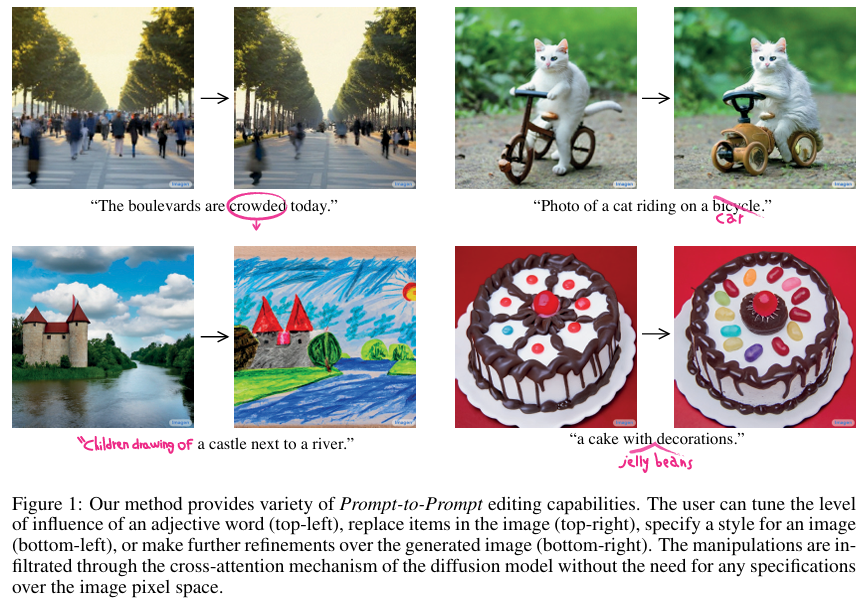 |
|---|
| 图1：我们的方法具备多种“提示到提示”的编辑能力。用户可以调整形容词的影响程度（左上角）、替换图像中的物品（右上角）、指定图像的风格（左下角），或者对生成的图像进行进一步优化（右下角）。这些操作通过扩散模型的交叉注意力机制实现，无需对图像像素空间进行任何特定设置。 |
2 相关工作
图像编辑是计算机图形学中最基础的任务之一，它涵盖了通过使用辅助输入（如标签、涂鸦、掩码或参考图像）来修改输入图像的过程。一种特别直观的图像编辑方式是通过用户提供的文本提示。最近，利用生成对抗网络（GANs）进行文本驱动的图像操作取得了显著进展，GANs以高质量生成而闻名，并且与CLIP协同使用，CLIP由经过数百万文本-图像对训练的语义丰富的联合图像文本表示构成。结合这些组件的开创性工作具有革命性意义，因为它们不需要额外的人工劳动，并且仅使用文本就能生成高度逼真的操作结果。Bau等人进一步展示了如何使用用户提供的掩码来定位基于文本的编辑，并将变化限制在特定的空间区域。然而，虽然基于GAN的图像编辑方法在高度精选的数据集（如人脸数据集）上取得了成功，但在大规模和多样化的数据集上却表现不佳。
为了获得更具表现力的生成能力，Crowson等人使用在多样化数据上训练的VQ-GAN作为骨干网络。其他工作则利用了最近的扩散模型，这些模型在高度多样化的数据集上实现了最先进的生成质量，常常超越GANs。Kim等人展示了如何进行全局变化，而Avrahami等人成功地使用用户提供的掩码作为指导进行局部操作。
虽然大多数仅需要文本（即不需要掩码）的工作仅限于全局编辑，但Bar-Tal等人提出了一种无需使用任何掩码的基于文本的局部编辑技术，并展示了令人印象深刻的结果。然而，他们的技术主要允许改变纹理，而不能修改复杂的结构，例如将自行车改为汽车。此外，与我们的方法不同，他们的方法需要为每个输入训练一个网络。
许多工作在基于纯文本条件生成图像（即文本到图像合成）方面取得了重大进展。最近出现了几个大规模的文本-图像模型，如Imagen、DALL-E2和Parti，展示了前所未有的语义生成能力。然而，这些模型无法对生成的图像进行控制，特别是仅使用文本指导时。更改与图像相关的原始提示中的单个单词通常会导致完全不同的结果。例如，在“狗”前面加上形容词“白色的”，常常会改变狗的形状。为了克服这个问题，一些工作假设用户提供掩码来限制应用更改的区域。
与以往的工作不同，我们的方法仅需要文本输入，通过利用生成模型内部层的空间信息，为用户提供了一种更加直观的编辑体验，用户只需修改文本提示，就能修改局部或全局的细节。
3 方法
设$I$是由文本引导的扩散模型根据文本提示$P$和随机种子$s$生成的图像。我们的目标是仅在编辑后的提示$P^{\ast}$的引导下编辑输入图像，得到编辑后的图像$I^{\ast}$。例如，假设有一张由提示“我的新自行车”生成的图像，用户想要编辑自行车的颜色、材质，甚至用滑板车替换它，同时保留原始图像的外观和结构。对用户来说，一个直观的界面是直接更改文本提示，进一步描述自行车的外观，或者用另一个词替换它。与以往的工作不同，我们希望避免依赖任何用户定义的掩码来辅助或指示编辑的位置。一种简单但未成功的尝试是固定内部随机性，然后使用编辑后的文本提示重新生成图像。不幸的是，如图2所示，这样会得到一张结构和构图完全不同的图像。
我们的关键发现是，生成图像的结构和外观不仅取决于随机种子，还取决于在扩散过程中像素与文本嵌入之间的交互。通过修改在交叉注意力层中发生的像素与文本的交互，我们实现了 “提示到提示”（Prompt-to-Prompt）的图像编辑能力。更具体地说，注入输入图像$I$的交叉注意力图使我们能够保留原始的构图和结构。在3.1节中，我们回顾交叉注意力的使用方式；在3.2节中，我们描述如何利用交叉注意力进行图像编辑。有关扩散模型的更多背景信息，请参阅附录A。
| 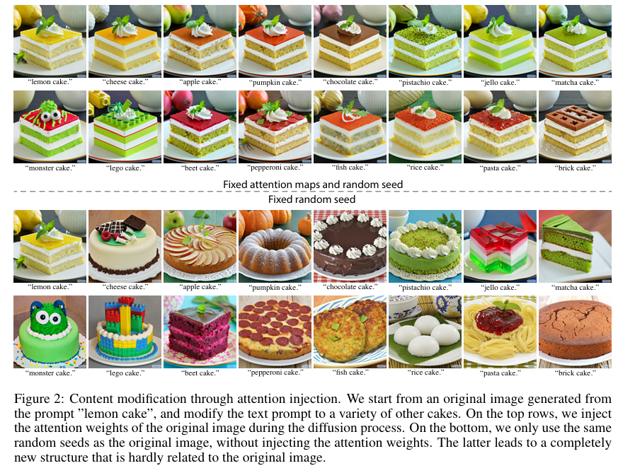 |
|---|
| 图2：通过注意力注入进行内容修改。我们从由“柠檬蛋糕”提示生成的原始图像开始，将文本提示修改为各种其他蛋糕。在顶行中，我们在扩散过程中注入原始图像的注意力权重。在底行中，我们仅使用与原始图像相同的随机种子，但不注入注意力权重。后者会产生一个与原始图像几乎没有关联的全新结构。 |
3.1 文本条件扩散模型中的交叉注意力
我们使用Imagen文本引导合成模型作为骨干模型。由于图像的构图和几何形状大多在$64×64$分辨率下确定，我们仅对文本到图像的扩散模型进行适配，超分辨率过程保持不变。回顾可知，每个扩散步骤$t$都包括使用U型网络，根据噪声图像$z_{t}$和文本嵌入$\psi(P)$预测噪声$\epsilon$。在最后一步，这个过程生成图像$I = z_{0}$。最重要的是，两种模态之间的交互发生在噪声预测阶段，在这个阶段，视觉和文本特征的嵌入通过交叉注意力层融合，为每个文本标记生成空间注意力图。
更正式地，如图3（顶部）所示，噪声图像的深度空间特征$\phi(z_{t})$被投影到查询矩阵$Q = \ell_{Q}(\phi(z_{t}))$，文本嵌入被投影到键矩阵$K = \ell_{K}(\psi(P))$和值矩阵$V = \ell_{V}(\psi(P))$，这些投影通过学习得到的线性投影$\ell_{Q}$、$\ell_{K}$、$\ell_{V}$实现。注意力图则由下式得出：
其中，单元格$M_{ij}$定义了第$j$个标记的值对像素$i$的权重，$d$是键和查询的潜在投影维度。最后，交叉注意力输出定义为$\widehat{\phi}(z_{t}) = MV$，然后用于更新空间特征$\phi(z_{t})$。
直观地说，交叉注意力输出$MV$是值$V$的加权平均值，权重是注意力图$M$，它与$Q$和$K$之间的相似度相关。在实际应用中，为了提高表达能力，通常会并行使用多头注意力机制，然后将结果连接起来，并通过一个学习得到的线性层以获得最终输出。
与GLIDE类似，Imagen在每个扩散步骤的噪声预测中，通过两种注意力层对文本提示进行条件设定（见附录A.2）：i）交叉注意力层；ii）混合注意力层，它通过简单地将文本嵌入序列连接到每个自注意力层的键值对，同时起到自注意力和交叉注意力的作用。在本文的其余部分，我们将这两种注意力层都称为交叉注意力，因为我们的方法仅干预混合注意力中的交叉注意力部分。也就是说，在混合注意力模块中，仅修改最后几个通道，这些通道对应于文本标记。
| 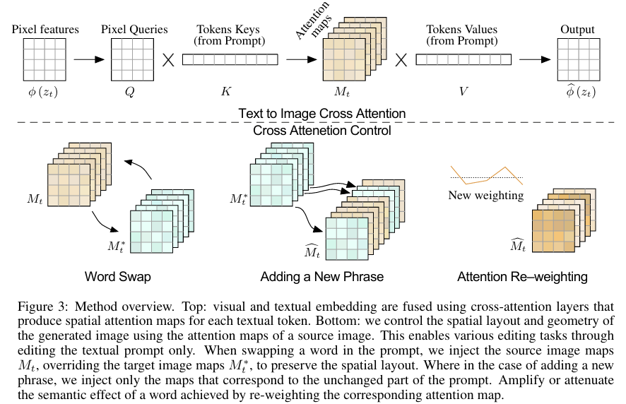 |
|---|
| 图3：方法概述。顶部：视觉和文本嵌入通过交叉注意力层融合，为每个文本标记生成空间注意力图。底部：我们利用源图像的注意力图来控制生成图像的空间布局和几何形状。这使得仅通过编辑文本提示就能实现各种编辑任务。当在提示中替换一个单词时，我们注入源图像的注意力图$M_t$，覆盖目标图像的注意力图$M_t^{\ast}$，以保留空间布局。在添加新短语的情况下，我们仅注入与提示中未改变部分相对应的注意力图。通过重新加权相应的注意力图，可以放大或减弱某个单词的语义效果。 |
3.2 控制交叉注意力
我们回到关键发现——生成图像的空间布局和几何形状取决于交叉注意力图。像素与文本之间的这种交互如图4所示，其中绘制了平均注意力图。可以看出，像素更倾向于被描述它们的单词吸引，例如，熊的像素与“熊”这个词相关。注意，这里求平均是为了可视化目的，在我们的方法中，每个注意力头的注意力图是分开保存的。有趣的是，我们可以看到图像的结构在扩散过程的早期步骤就已经确定。
| 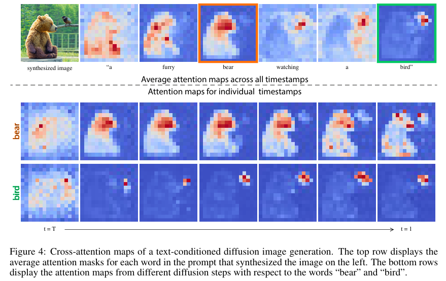 |
|---|
| 图4：文本条件扩散图像生成的交叉注意力图。顶行展示了用于合成左侧图像的提示中每个单词的平均注意力掩码。底行展示了在不同扩散步骤下，与“熊”和“鸟”这两个单词相关的注意力图。 |
由于注意力反映了整体构图，我们可以将从原始提示$P$生成过程中获得的注意力图$M$，注入到使用修改后提示$P^{\ast}$的第二次生成过程中。这使得合成的编辑后图像$I^{\ast}$不仅能根据编辑后的提示进行调整，还能保留输入图像$I$的结构。这个例子是基于注意力的一系列更广泛操作中的一个特定实例，这些操作可以实现不同类型的直观图像编辑。因此，我们首先提出一个通用框架，然后介绍具体编辑操作的细节。
设$DM(z_{t}, P, t, s)$为扩散过程单个步骤$t$的计算，它输出噪声图像$z_{t - 1}$和注意力图$M_{t}$（若未使用则省略）。我们用$DM(z_{t}, P, t, s){M \leftarrow \widehat{M}}$表示在扩散步骤中，用额外给定的注意力图$\widehat{M}$覆盖注意力图$M$，但保留来自给定提示的值$V$。我们还用$M_{t}^{\ast}$表示使用编辑后提示$P^{\ast}$生成的注意力图。最后，我们将$Edit(M_{t}, M_{t}^{\ast}, t)$定义为一个通用编辑函数，它接收原始图像和编辑后图像在生成过程中第$t$个注意力图作为输入。
我们用于控制图像生成的通用算法包括同时对两个提示执行迭代扩散过程，在每个步骤中根据所需的编辑任务应用基于注意力的操作。需要注意的是，为了使上述方法有效，我们必须固定内部随机性。这是由于扩散模型的特性，即使对于相同的提示，两个不同的随机种子也会产生截然不同的输出。正式地，我们的通用算法如下：
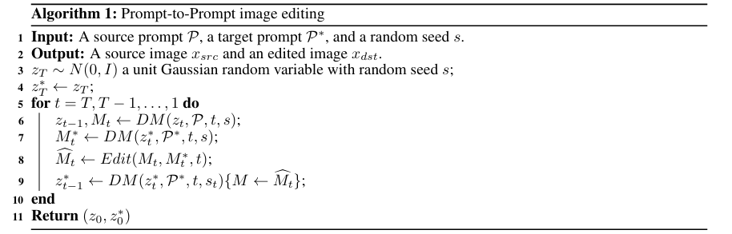
需要注意的是，我们也可以将由提示$P$和随机种子$s$生成的图像$I$作为额外输入。然而，算法保持不变。关于真实图像的编辑，请参阅第4节。此外，我们可以通过在扩散前向函数内部应用编辑函数来跳过第7行的前向调用。而且，扩散步骤可以在同一批次中对$z_{t - 1}$和$z_{t}^{*}$并行应用，因此与扩散模型的原始推理相比，仅增加了一步开销。
现在我们来介绍具体的编辑操作，补充$Edit(M_{t}, M_{t}^{*}, t)$函数的缺失定义。图3（底部）展示了操作概览。
- 单词替换：在这种情况下，用户将原始提示中的标记替换为其他标记，例如，将$P =$“一辆大红色自行车” 改为$P^{*} =$“一辆大红色汽车”。主要的挑战是在保留原始构图的同时，还要符合新提示的内容。为此，我们将源图像的注意力图注入到使用修改后提示的生成过程中。然而，所提出的注意力注入可能会过度限制几何形状，特别是当涉及到像 “汽车” 到 “自行车” 这样的重大结构修改时。我们通过提出一种更柔和的注意力约束来解决这个问题：其中$\tau$是一个时间戳参数，用于确定注意力注入应用到哪个步骤。注意，图像的构图在扩散过程的早期步骤就已确定。因此，通过限制注入步骤的数量，我们可以在引导新生成图像构图的同时，为适应新提示留出必要的几何形状调整空间。第4节提供了相关示例。我们算法的另一种自然的松弛方式是为提示中的不同标记分配不同数量的注入时间戳。如果两个单词由不同数量的标记表示，可以根据需要使用对齐函数对注意力图进行复制或平均。
- 添加新短语：在另一种情况下，用户向提示中添加新的标记，例如，将$P =$“一座城堡在河边” 改为$P^{\ast} =$“孩子们画的一座城堡在河边”。为了保留共同的细节，我们仅对两个提示中的共同标记应用注意力注入。正式地，我们使用一个对齐函数$A$，它接收目标提示$P^{\ast}$中的一个标记索引，并输出$P$中对应的标记索引（如果没有匹配则输出None）。然后，编辑函数定义为：回想一下，索引$i$对应像素值，索引$j$对应文本标记。同样，我们可以设置一个时间戳$\tau$来控制注意力注入应用的扩散步骤数量。这种编辑方式实现了多种 “提示到提示” 的功能，如风格化、指定对象属性或全局操作，第4节将展示相关示例。
- 注意力重加权：最后，用户可能希望增强或减弱每个标记对生成图像的影响程度。例如，考虑提示$P =$“一个毛茸茸的红色球”，假设我们想让球的毛茸茸程度更强或更弱。为了实现这种操作，我们用参数$c \in [-2, 2]$缩放指定标记$j^{\ast}$的注意力图，从而产生更强或更弱的效果。其余的注意力图保持不变。即：如第4节所述，参数$c$可以对诱导效果进行精细且直观的控制。
4 应用
我们在第3节中介绍的方法，通过控制与用户提供的提示中每个单词相对应的空间布局，实现了直观的纯文本编辑。在本节中，我们展示了使用该技术的几个应用场景。
- 纯文本局部编辑：我们首先展示了在无需用户提供掩码的情况下，通过修改用户提供的提示进行局部编辑。在图2中，我们给出了一个示例，即使用“柠檬蛋糕”的提示生成一张图像。当将“柠檬”一词替换为“南瓜”时（顶行），我们的方法能够保留空间布局、几何形状和语义。可以观察到，背景得到了很好的保留，包括左上角的柠檬变成了南瓜。另一方面，即使在确定性设置（即使用DDIM）中使用相同的随机种子，直接将“南瓜蛋糕”的提示输入合成模型，也会导致完全不同的几何形状（第三行）。我们的方法在处理像“意大利面蛋糕”这样具有挑战性的提示时也能成功（第二行）——生成的蛋糕由上面浇有番茄酱的意大利面层组成。在图5中提供了另一个示例，我们不是注入整个提示的注意力，而只是注入特定单词“蝴蝶”的注意力。这使得在改变其余内容的同时，能够保留原始的蝴蝶。附录（图13）中提供了更多结果。
| 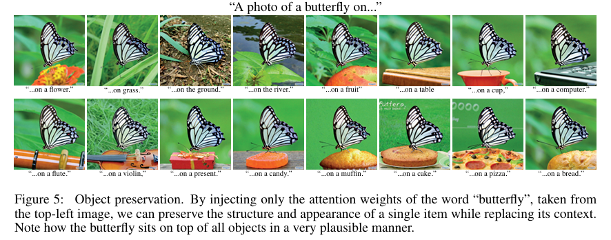 |
|---|
| 图5：物体保留。通过仅注入取自左上角图像中“蝴蝶”一词的注意力权重，我们可以在替换其周围环境的同时，保留单个物体的结构和外观。注意，蝴蝶以一种非常自然的方式位于所有物体之上。 |
如图6所示，我们的方法不仅限于修改纹理，还可以进行结构修改，例如将“自行车”改为“汽车”。为了分析我们的注意力注入效果，在左列中我们展示了不注入交叉注意力的结果，此时更改单个单词会导致完全不同的结果。从左到右，我们展示了随着注入注意力的扩散步骤数量增加而生成的图像。注意，应用交叉注意力注入的扩散步骤越多，对原始图像的保真度越高。然而，并非在所有扩散步骤中都应用注入就能获得最佳结果。因此，我们可以通过改变注入步骤的数量，让用户更好地控制对原始图像的保真度。
| 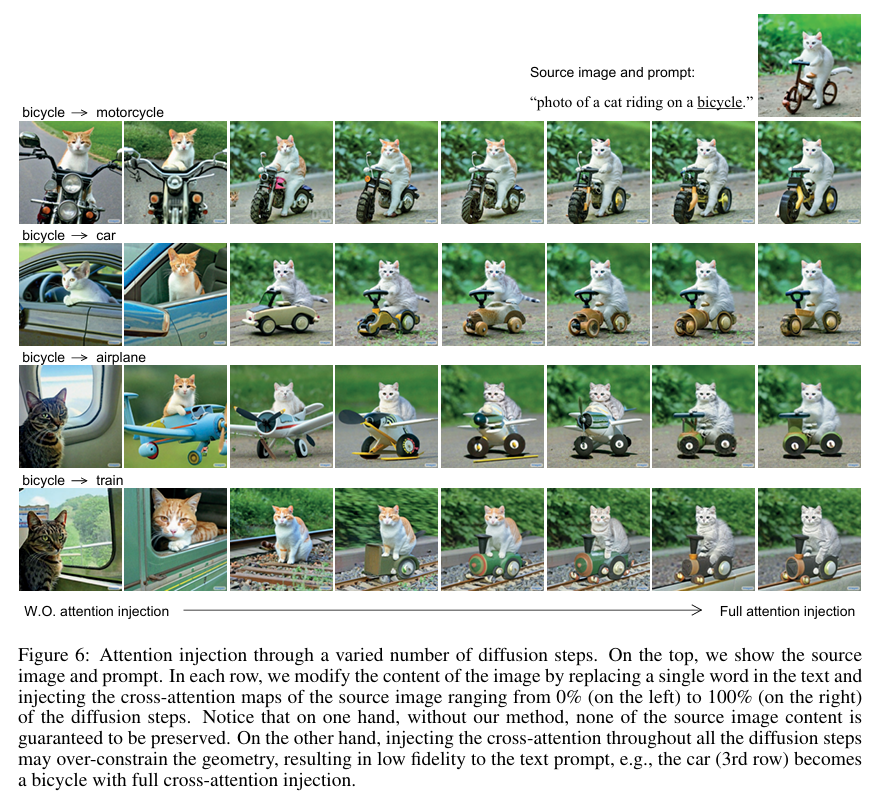 |
|---|
| 图6：通过不同数量扩散步骤进行注意力注入。顶部展示了源图像和提示文本。在每一行中，我们通过替换文本中的单个单词并在扩散步骤中注入源图像的交叉注意力图（从左侧的0%到右侧的100%）来修改图像内容。请注意，一方面，如果不使用我们的方法，源图像的内容无法得到保留。另一方面，在所有扩散步骤中都注入交叉注意力可能会过度限制图像的几何形状，导致与文本提示的保真度较低，例如，在第三行中，完全注入交叉注意力后，汽车变成了自行车。 |
用户除了用一个单词替换另一个单词，可能还希望为生成的图像添加新的描述。在这种情况下，我们保留原始提示的注意力图，同时让生成器处理新添加的单词。例如，见图7（顶部），我们在“汽车”前添加“压碎的”，在保留背景的同时，生成的图像在原始基础上增加了额外的细节。更多示例见附录（图14）。
- 全局编辑：保留图像构图不仅对局部编辑很有价值，也是全局编辑的一个重要方面。在这种情况下，编辑应该影响图像的所有部分，但仍保留原始构图，例如物体的位置和特征。如图7（底部）所示，我们在添加“雪”或改变光照的同时保留了图像内容。图8中展示了更多示例，包括将草图转换为逼真照片以及赋予图像艺术风格。
- 使用注意力重加权进行渐变控制：虽然通过编辑提示来控制图像非常有效，但我们发现它仍然无法完全控制生成的图像。以“雪山”这个提示为例，用户可能想要控制山上的积雪量。然而，通过文本很难描述所需的积雪量。相反，我们提出一种渐变控制方法，用户可以控制特定单词所产生效果的强度，如图9所示。如第3节所述，我们通过重新缩放指定单词的注意力来实现这种控制。更多结果见附录（图15）。
- 真实图像编辑：编辑真实图像需要找到一个初始噪声向量，当将其输入扩散过程时能生成给定的输入图像。这个过程称为反演，最近在GANs领域引起了相当多的关注，但对于文本引导的扩散模型尚未得到充分研究。
| 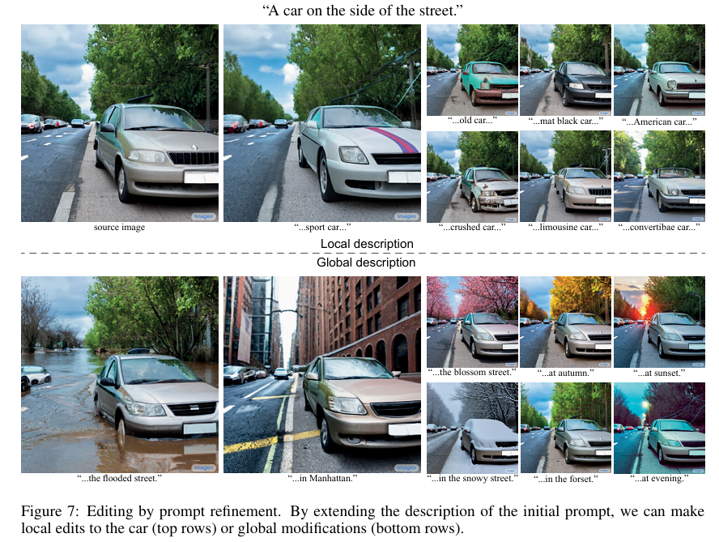 |
|---|
| 图7：通过完善提示进行编辑。通过扩展初始提示的描述，我们可以对汽车进行局部编辑（顶行）或进行全局修改（底行）。 |
| 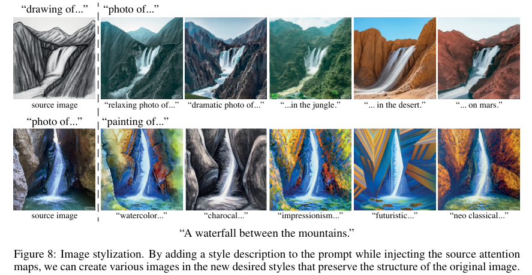 |
|---|
| 图8：图像风格化。在注入源注意力图的同时，向提示中添加风格描述，我们就能创作出具有新期望风格且保留原始图像结构的各种图像。 |
| 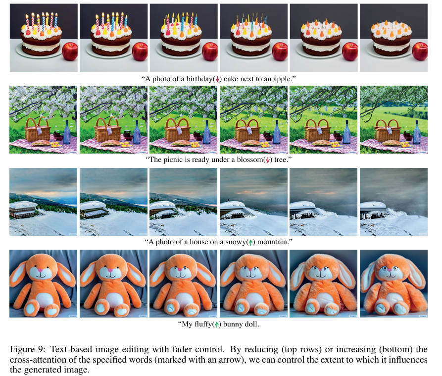 |
|---|
| 图9：带渐变控制的基于文本的图像编辑。通过减少（顶行）或增加（底行）指定单词（用箭头标记）的交叉注意力，我们可以控制该单词对生成图像的影响程度。 |
下面，我们展示基于常见的扩散模型反演技术对真实图像进行编辑的初步结果。首先，一种比较简单的方法是向输入图像添加高斯噪声，然后执行预定义数量的扩散步骤。由于这种方法会导致严重的失真，我们采用一种改进的反演方法，该方法基于确定性的DDIM模型而非DDPM模型。我们以相反的方向执行扩散过程，即从$x_{0}$到$x_{T}$，而不是从$x_{T}$到$x_{0}$，其中$x_{0}$设置为给定的真实图像。
这种反演过程通常能产生令人满意的结果，如图10所示。然而，在许多其他情况下，反演不够准确，如图11所示。这部分是由于存在失真 - 可编辑性的权衡，我们发现降低无分类器引导参数（即减少提示的影响）可以改善重建效果，但会限制我们进行重大操作的能力。
| 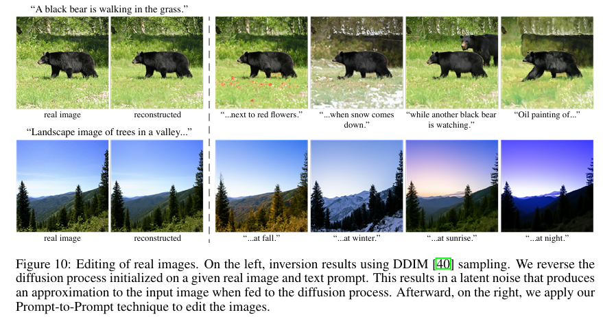 |
|---|
| 图10：真实图像的编辑。左边是使用DDIM [40]采样的反演结果。我们对给定的真实图像和文本提示初始化的扩散过程进行反向操作，得到一个潜在噪声，将其输入扩散过程后能生成与输入图像近似的图像。之后，在右边，我们应用“提示到提示”技术对图像进行编辑。 |
| 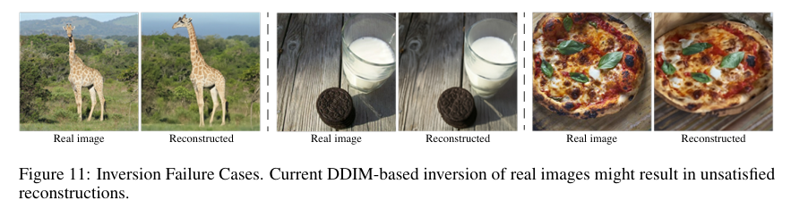 |
|---|
| 图11：反演失败案例。目前基于DDIM的真实图像反演可能会导致重建效果不理想。 |
为了缓解这一限制，我们建议使用直接从注意力图中提取的掩码来恢复原始图像中未编辑的区域。注意，这里的掩码是在没有用户指导的情况下生成的。如图12所示，即使使用简单的DDPM反演方案（添加噪声后再去噪），这种方法也能很好地工作。注意，在各种编辑操作下，猫的特征都能得到很好的保留，而掩码仅从提示本身生成。
| 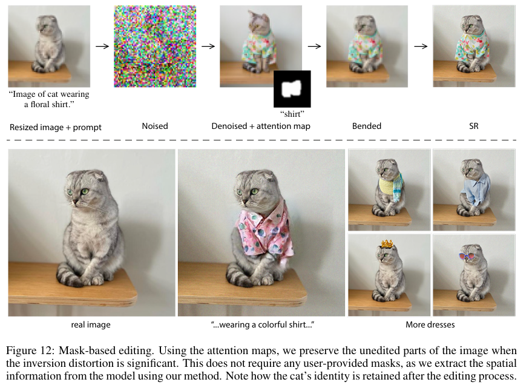 |
|---|
| 图12：基于掩码的编辑。当反演产生的失真较为严重时，我们利用注意力图来保留图像中未编辑的部分。这无需任何用户提供的掩码，因为我们使用自身的方法从模型中提取了空间信息。请注意，在编辑过程之后，猫咪的特征是如何得以保留的。 |
5 结论
在这项工作中，我们揭示了文本到图像扩散模型中交叉注意力层的强大能力。我们发现，这些高维层具有可解释的空间映射表示，在将文本提示中的单词与合成图像的空间布局联系起来方面发挥着关键作用。基于这一发现，我们展示了对提示进行各种操作如何直接控制合成图像的属性，为包括局部和全局编辑在内的各种应用开辟了道路。这项工作是为用户提供简单直观的图像编辑方法的第一步，充分利用了文本语义的力量。它使用户能够在语义文本空间中进行导航，每次操作后都能实现渐进式的变化，而不是在每次文本修改后都从头生成所需图像。
虽然我们已经证明了仅通过更改文本提示就能实现语义控制，但我们的技术仍存在一些局限性，需要在后续工作中加以解决。第一，目前的反演过程在部分测试图像上会产生明显的失真。此外，反演过程要求用户提供合适的提示，对于复杂的图像构图来说，这可能具有一定挑战性。需要注意的是，文本引导扩散模型的反演问题与我们的工作是相互独立的，我们将在未来对其进行深入研究。第二，当前的注意力图分辨率较低，因为交叉注意力层位于网络的瓶颈位置。这限制了我们进行更精确局部编辑的能力。为了缓解这一问题，我们建议在更高分辨率的层中也引入交叉注意力机制。由于这需要对训练过程进行分析，超出了我们目前的研究范围，因此留待未来的工作。最后，我们认识到目前的方法无法在图像中对现有对象进行空间移动，这类控制也留待未来研究。
6 致谢
我们感谢诺亚·格拉泽（Noa Glaser）、阿迪·齐彻（Adi Zicher）、亚龙·布罗德斯基（Yaron Brodsky）和什洛米·弗鲁赫特（Shlomi Fruchter），他们提供的宝贵意见有助于改进这项工作。我们还要感谢穆罕默德·诺鲁齐（Mohammad Norouzi）、奇图万·萨哈里亚（Chitwan Saharia）和威廉·陈（William Chan），感谢他们的支持以及提供的Imagen预训练模型。特别感谢约西·马蒂亚斯（Yossi Matias），他早期对这个问题的探讨给了我们很大启发，还激励并鼓励我们沿着直观交互的方向开发技术。
A 背景
A.1 扩散模型
扩散去噪概率模型（DDPM）是一种生成式潜变量模型，旨在对近似数据分布$q(x_{0})$且易于采样的分布$p_{\theta}(x_{0})$进行建模。DDPM在$x_{0}$空间中模拟一个从数据到噪声的 “正向过程”。这个过程是一个从$x_{0}$开始的马尔可夫链，在这个过程中，我们逐渐向数据中添加噪声，以生成潜变量$x_{1}, …, x_{T} \in X$。因此，潜变量序列遵循$q(x_{1}, …, x_{t} | x_{0})=\prod_{i=1}^{t} q(x_{t} | x_{t - 1})$，正向过程中的一步被定义为一个由参数$\beta_{0}, …, \beta_{T} \in(0,1)$构成的调度所参数化的高斯转移$q(x_{t} | x_{t - 1}):=N(x_{t} ; \sqrt{1-\beta_{t}} x_{t - 1}, \beta_{t})$。当$T$足够大时，最后的噪声向量$x_{T}$近似遵循各向同性高斯分布。
正向过程的一个有趣特性是，无需对中间潜变量进行采样，就可以将潜变量$x_{t}$直接表示为噪声和$x_{0}$的线性组合：
其中，$\alpha_{t}:=\prod_{i=1}^{t}(1-\beta_{i})$。
为了从分布$q(x_{0})$中进行采样，我们定义了从各向同性高斯噪声$x_{T}$到数据的对偶 “反向过程”$p(x_{t - 1} | x_{t})$，通过对后验$q(x_{t - 1} | x_{t})$进行采样来实现。由于难以处理的反向过程$q(x_{t - 1} | x_{t})$依赖于未知的数据分布$q(x_{0})$，我们使用参数化的高斯转移网络$p_{\theta}(x_{t - 1} | x_{t}):=N(x_{t - 1} | \mu_{\theta}(x_{t}, t), \sum _{\theta}(x_{t}, t))$对其进行近似。$\mu_{\theta}(x_{t}, t)$可以通过使用公式2预测添加到$x_{0}$的噪声$\varepsilon_{\theta}(x_{t}, t)$来替代。
在这个定义下，我们使用贝叶斯定理进行近似：
一旦我们训练好了$\varepsilon_{\theta}(x_{t}, t)$，就可以使用以下采样方法：
我们可以控制每个采样阶段的$\sigma_{t}$，在去噪扩散隐式模型（DDIM）中，通过在所有步骤中将$\sigma_{t}$设为0，可以使采样过程具有确定性。反向过程最终可以通过求解以下优化问题进行训练：
通过最大化变分下界，训练参数$\theta$以拟合$q(x_{0})$。
A.2 Imagen中的交叉注意力
Imagen由三个文本条件扩散模型组成：一个$64×64$的文本到图像模型，以及两个超分辨率模型（分别是从$64×64$到$256×256$和从$256×256$到$1024×1024$）。这些模型通过U型网络预测噪声$\varepsilon_{\theta}(z_{t}, c, t)$，$t$的取值范围是从$T$到$1$。其中，$z_{t}$是潜向量，$c$是文本嵌入。我们重点介绍这三个模型之间的差异：
- $64×64$模型：从随机噪声开始，采用如文献[10]中的U型网络。该模型通过U型网络下采样和上采样过程中分辨率为$[16, 8]$的交叉注意力层以及分辨率为$[32, 16, 8]$的混合注意力层，对文本嵌入进行条件设定。
- $64×64 \to 256×256$模型：以简单上采样后的$64×64$图像作为条件。使用一种高效版本的U型网络，在瓶颈层（分辨率为32）包含混合注意力层。
- $256×256 \to 1024×1024$模型：以简单上采样后的$256×256$图像作为条件。使用一种高效版本的U型网络，仅在瓶颈层（分辨率为64）包含交叉注意力层。
B 更多结果
我们提供了更多示例，展示了我们的方法在不同编辑操作上的应用效果。图13展示了单词替换的结果，图14展示了给图像添加描述的结果，图15展示了注意力重加权的结果。
 |
|---|
| 图13：通过单词替换进行提示到提示编辑的更多结果 |
 |
|---|
| 图14：通过添加描述进行提示到提示编辑的更多结果 |
 |
|---|
| 图15：通过注意力重加权进行提示到提示编辑的更多结果 |